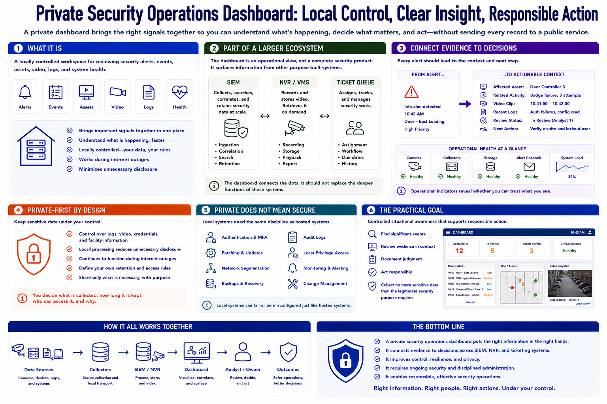

What Is a Private Security Operations Dashboard?
Connecting to LMS... Progress: in progress

Narration
A private security operations dashboard is a locally controlled workspace for reviewing security alerts, events, assets, video, logs, and system health. It brings important signals together so an owner or analyst can understand what is happening without sending every record to a public service.
The dashboard is an operational view, not a complete security product by itself. A SIEM collects, searches, correlates, and retains security data at scale. An NVR records and retrieves video. A ticket queue assigns and tracks work. The dashboard can surface information from all three, but it should not pretend to replace their deeper functions.
Useful dashboards connect evidence to decisions. An alert should lead to relevant context, affected assets, related activity, review status, and a clear next action. Operational indicators should reveal whether cameras, collectors, storage, and alert channels are healthy enough to trust.
Private-first design improves control over sensitive logs, images, credentials, and facility information. Local processing can reduce unnecessary disclosure, preserve function during an internet outage, and let the organization define its own retention and access rules.
Private does not automatically mean secure. The dashboard still needs authentication, patching, segmentation, backups, audit logs, and disciplined administration. Local systems can fail or be misconfigured just like hosted systems.
The practical goal is controlled situational awareness. The dashboard should help authorized people find significant events, review evidence, document judgment, and act responsibly while collecting no more sensitive data than the legitimate security purpose requires.